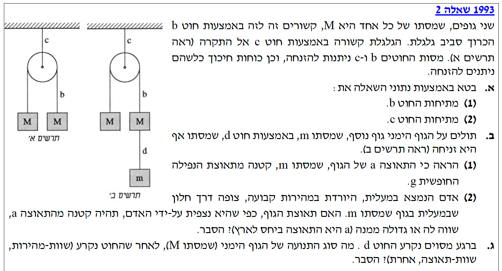
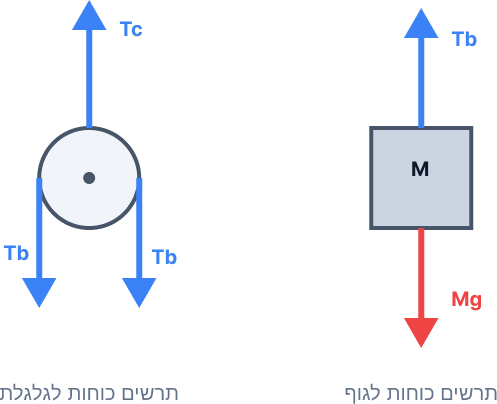
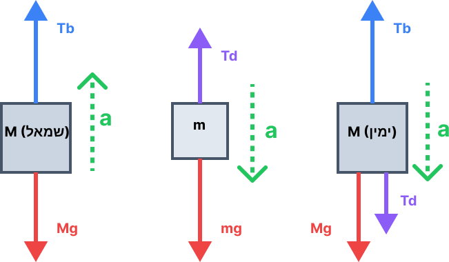

שני גופים בעלי מסה זהה \( M \). חוטים \( b \) ו- \( c \) בעלי מסה זניחה. גלגלת שמסתה זניחה. המערכת בתרשים א' נמצאת בשיווי משקל (מאחר והמסות זהות, אין כוח שקול שיגרום לתאוצה). הנתונים הם פרמטריים ולכן נניח עבודה במערכת יחידות תקנית (MKS).
לבטא את המתיחות בחוט \( b \) (נסמן כ- \( T_b \)) ואת המתיחות בחוט \( c \) (נסמן כ- \( T_c \)) באמצעות הנתונים.
החוק השני של ניוטון: \(\Sigma\vec{F} = m\vec{a}\)
כוח הכבידה: \(F = mg\)
נשרטט תרשים כוחות חופשי (FBD) עבור אחד הגופים (\( M \)) ועבור הגלגלת. נבחר ציר \( y \) חיובי כלפי מעלה.

עבור כל אחד מהגופים \( M \), המערכת במנוחה (תאוצה \( a = 0 \)):
מכאן נקבל את המתיחות בחוט \( b \):
כעת נרשום משוואת כוחות עבור הגלגלת (מסתה זניחה, ולכן סכום הכוחות עליה תמיד אפס, גם אם הייתה מאיצה):
נציב את \( T_b \) שמצאנו ונקבל:
מוסיפים גוף שמסתו \( m \) בצד ימין (תרשים ב'), המחובר באמצעות חוט \( d \). המערכת כעת אינה מאוזנת ומתחילה לנוע. תאוצת הגוף \( m \) היא \( a \). תאוצת הכובד נסמנה כ- \( g \), ונזכור שגודלה חיובי תמיד (\( 10\text{ m/s}^2 \)). המתיחות בחוטים בתוך מערכת מאיצה שונה מהמתיחות במצב מנוחה.
להראות (להוכיח מתמטית) כי תאוצת הגוף \( m \), כלומר התאוצה \( a \), קטנה מגודל תאוצת הנפילה החופשית \( g \).
החוק השני של ניוטון: \(\Sigma\vec{F} = m\vec{a}\)
ראשית, נקבע את כיוון הציר החיובי עבור כל גוף, בכיוון התנועה שלו. הגופים מימין ינועו מטה (ציר חיובי מטה), והגוף משמאל ינוע מעלה (ציר חיובי מעלה). נשרטט תרשים כוחות לכל אחד משלושת הגופים בנפרד:

נרשום את משוואות החוק השני של ניוטון עבור כל אחד מהגופים, בהתאם לציר שבחרנו (כיוון התאוצה הוא חיובי):
עבור גוף \( M \) השמאלי (מאיץ מעלה):
\[ (1)\quad T_b - Mg = Ma \]עבור גוף \( M \) הימני (מאיץ מטה):
\[ (2)\quad Mg + T_d - T_b = Ma \]עבור גוף \( m \) הימני (מאיץ מטה):
\[ (3)\quad mg - T_d = ma \]נחבר את משוואות (2) ו-(3) אלגברית. נבחין שהכוח הפנימי \( T_d \) (מתיחות החוט התחתון) מתבטל:
כעת נחבר את משוואה (1) עם משוואה (4). שוב נבחין שהכוח הפנימי \( T_b \) מתבטל:
נחלץ את התאוצה \( a \):
כדי להוכיח כי \( a < g \), נסתכל על הביטוי שקיבלנו. ניתן לרשום אותו כך:
היות ומסות הגופים תמיד חיוביות (\( M > 0 \)), המכנה \( 2M + m \) בהכרח גדול מהמונה \( m \). לכן, השבר \( \frac{m}{2M + m} \) הוא שבר קטן מ-1. כפל של \( g \) במספר הקטן מ-1 ייתן בהכרח תוצאה הקטנה מ- \( g \).
הערה: סעיף זה עוסק בחישוב תאוצה במערכת ייחוס נעה (מהירות ותאוצה יחסית / טרנספורמציית גליליי). נושא זה הוצא מתוכנית הלימודים הנוכחית של משרד החינוך בפיזיקה 5 יח"ל, ולכן אין צורך לפתור אותו לקראת בחינת הבגרות.
המערכת בתנועה (הגופים מימין יורדים, הגוף משמאל עולה). ברגע מסוים, חוט \( d \) נקרע. לגוף הימני \( M \) יש כעת מהירות מסוימת כלפי מטה ברגע הקריעה (נסמן אותה כ- \( \vec{v} \)). החוט \( d \) נותק ולכן המסה \( m \) נופלת חופשית ואינה משפיעה יותר על המערכת העליונה.
לקבוע מהו סוג התנועה (תנועה שוות-מהירות, שוות-תאוצה, או אחרת) של הגוף הימני \( M \) מיד לאחר שהחוט \( d \) נקרע, ולהסביר.
החוק השני של ניוטון: \(\Sigma\vec{F} = m\vec{a}\)
החוק הראשון של ניוטון (התמדה): כאשר \(\Sigma\vec{F} = 0\), הגוף יתמיד במצבו (מנוחה או תנועה במהירות קבועה בקו ישר).
מיד לאחר שהחוט התחתון \( d \) נקרע, המתיחות בו מתאפסת (\( T_d = 0 \)). המערכת חוזרת בדיוק למצב הפיזיקלי שתואר בתרשים א' (בסעיף א'). בשני צדי הגלגלת תלויים גופים בעלי מסות זהות \( M \).
אם נרשום מחדש את משוואות הכוחות (באותו כיוון ציר כמו בסעיף ב'):
גוף שמאלי: \( T_b - Mg = M a_{new} \)
גוף ימני: \( Mg - T_b = M a_{new} \)
חיבור המשוואות ייתן:
קיבלנו שהתאוצה של המערכת מתאפסת מיד עם קריעת החוט. שקול הכוחות על הגוף הימני (ועל השמאלי) הוא אפס.
אך האם הגוף נעצר? לא!
לפי החוק הראשון של ניוטון, אם שקול הכוחות על גוף הוא אפס, הוא מתמיד במצב תנועתו. מכיוון שברגע קריעת החוט הייתה לגוף הימני מהירות התחלתית \( v \) כלפי מטה, הוא ימשיך לנוע באותה מהירות בדיוק (גודל וכיוון).